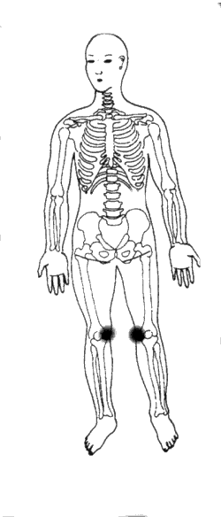
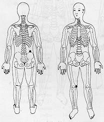

Travas de Segurança da Energia 1 - Primeira Profundidade.
|

|
TSE 1
¬ Colocar as mãos sobre a região interna dos joelhos TSE 1. ou
M.e. sobre o joelho direito TSE1;
M.d. no quadril direito na costa TSE2 .
|
 |